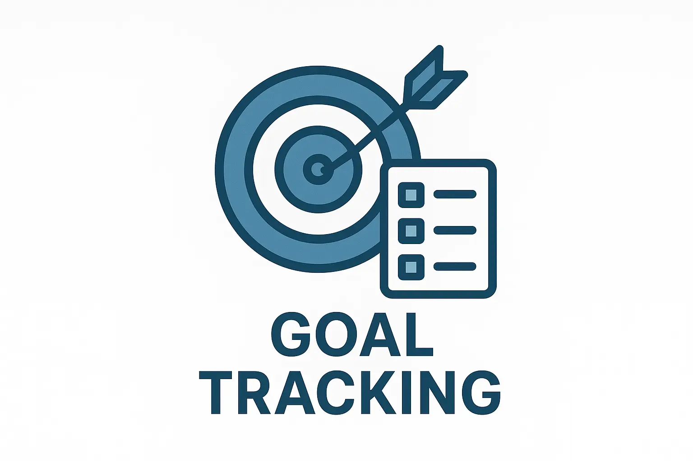
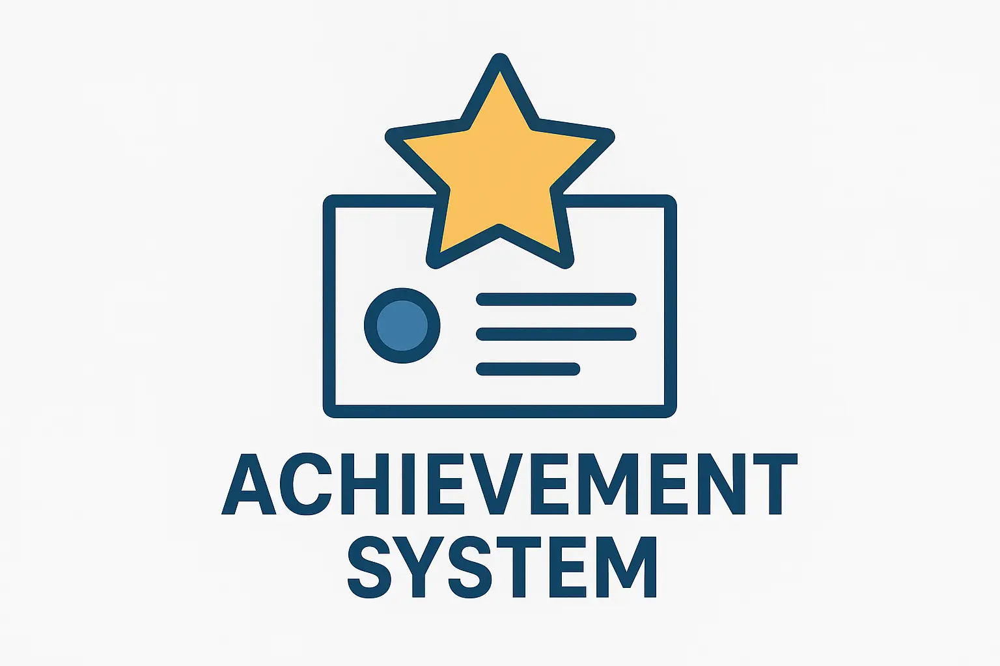

Features

Set goals and track progress toward milestones.
See your progress with clear visuals and summaries.

Log and manage achievements as you complete them.
Achievements
Review recent achievements and celebrate your progress.